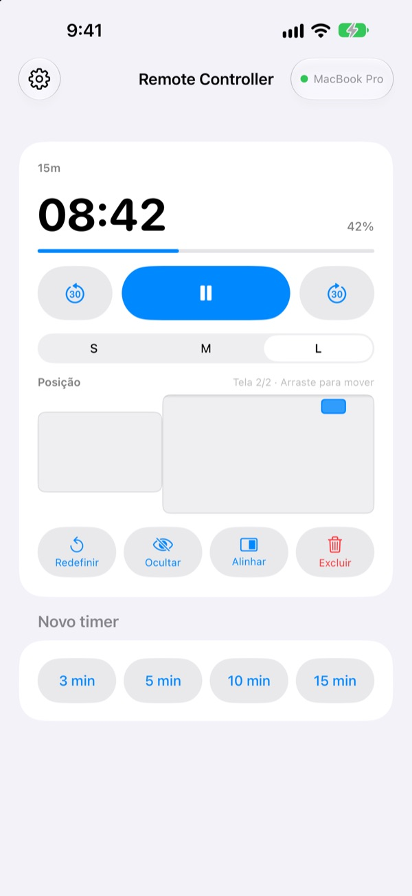
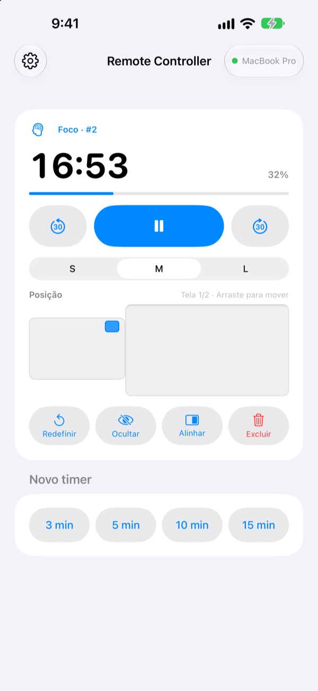
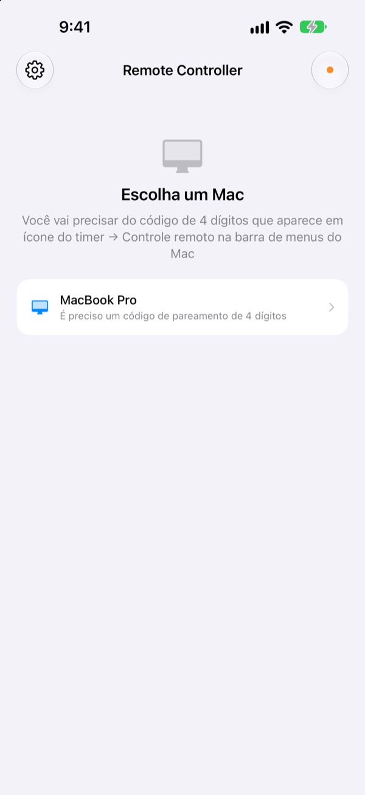

Saia de perto do Mac.
O tempo fica na sua mão.
Controle pelo iPhone os timers do StickyPresenter no seu Mac. Vá para a frente da sala e continue vendo o tempo restante, pause, adicione 30 segundos ou tire o timer de cima do gráfico que ele está cobrindo.
Grátis · iOS 17 ou posterior · Precisa de um Mac com o StickyPresenter aberto no mesmo Wi‑Fi.

Ainda volta até o notebook só para mexer no timer?
A apresentação se estende e você quer mais tempo. O timer está bem em cima do seu melhor gráfico. Até agora, isso significava atravessar o palco e procurar o trackpad na frente de todo mundo. Com o Remote Controller, você fica onde está e toca no iPhone uma vez.
Veja o tempo restante e ajuste na hora
O tempo restante e o progresso se atualizam a cada segundo. No Pomodoro, você também vê se é Foco ou Pausa e em qual ciclo está.
Passou do tempo? Adicione 30 segundos. Vai terminar antes? Tire 30. Inicie um novo timer de 3, 5, 10 ou 15 minutos com um toque e mude o widget entre S, M e L para que a última fileira consiga ler.

Digite o código uma vez e pronto
Abra o app e todos os Macs do seu Wi‑Fi com o StickyPresenter aberto aparecem em uma lista. Escolha o seu e digite o código de quatro dígitos que aparece em ícone do timer ▸ Controle remoto, na barra de menus do Mac.
Depois disso, o app se conecta sozinho a esse Mac sempre que você o abre. Sem conta e sem servidor: os dois dispositivos conversam diretamente pela sua rede local.

Pronto em três passos
- 1
Abra o StickyPresenter no Mac
Quando o ícone do timer aparecer na barra de menus, está tudo pronto. O app continua lá mesmo com todas as janelas fechadas.
- 2
Abra o app no mesmo Wi‑Fi
Quando ele pedir acesso à rede local, toque em Permitir. É assim que ele encontra o seu Mac.
- 3
Escolha o Mac e digite o código
Digite o código de pareamento de quatro dígitos que aparece em ícone do timer ▸ Controle remoto, na barra de menus do Mac, e o controle é seu.
O que você pode fazer pelo iPhone
- Tempo restante
- Tempo que falta, progresso, fase do Pomodoro (Foco ou Pausa) e número do ciclo, a cada segundo
- Iniciar · Pausar
- Um único botão grande no centro
- −30 s · +30 s
- Os botões dos lados ajustam na hora um timer em andamento
- Novo timer
- 3, 5, 10 ou 15 minutos
- Tamanho
- Widget em S, M ou L
- Posição
- Arraste em uma miniatura da disposição das telas do Mac, até para uma tela estendida
- Ocultar
- Esconde o widget do público por um momento
- Alinhar
- Traz um widget perdido de volta para perto da janela do timer
- Redefinir · Excluir
- Recomeça o timer do zero ou o remove
- Atalhos · Siri
- Diga
Iniciar um timer com o Remote Controllerpara abrir um timer no Mac
O controle remoto só funciona com timers rodando no Mac. As notas e os roteiros do teleprompter nunca são enviados ao iPhone, e ele não passa slides.
Perguntas frequentes
Dá para usar o app do iPhone sozinho?
Não. O Remote Controller é o controle remoto do StickyPresenter para Mac, então o StickyPresenter precisa estar aberto em um Mac no mesmo Wi‑Fi. Baixe o app do Mac pelo link abaixo ou em Baixar o app do Mac, nos Ajustes do app.
Meu Mac não aparece na lista.
Se nenhum Mac aparecer em 10 segundos, o app mostra uma lista de verificação. Confira de cima para baixo: o StickyPresenter está aberto no Mac (procure o ícone do timer na barra de menus), os dois dispositivos estão no mesmo Wi‑Fi (redes de convidados não funcionam), o Remote Controller está ativado em Ajustes ▸ Privacidade e Segurança ▸ Rede Local no iPhone, o StickyPresenter está permitido em Ajustes do Sistema ▸ Privacidade e Segurança ▸ Rede Local no Mac e a VPN está desligada.
Aparece que o código de pareamento está errado.
Digite os quatro dígitos que aparecem agora em ícone do timer ▸ Controle remoto, na barra de menus do Mac. Se alguém clicou em Novo código de pareamento no Mac, só o código novo funciona.
Aparece que o Mac não reconhece mais este iPhone.
Isso acontece depois de usar Esquecer controles remotos pareados no Mac ou de reinstalar o StickyPresenter. Toque no Mac na lista e digite o código de pareamento mais uma vez.
Aparece que o Mac não respondeu.
Verifique se o Mac não está em repouso, se os dois dispositivos estão no mesmo Wi‑Fi e se a VPN está desligada.
Aparece que o app do Mac precisa ser atualizado.
O StickyPresenter do seu Mac é mais antigo que o controle remoto. Atualize-o pela Mac App Store e escolha o Mac de novo.
É seguro numa sala de reunião cheia de Macs?
Sim. O controle só conversa com o Mac com que foi pareado, e um controle que não conhece o seu código não chega ao seu Mac. Tudo trafega por uma conexão direta e criptografada na mesma rede. Se você já mostrou seu código para alguém, clique em Novo código de pareamento no Mac.
O que sai pela internet?
Seus timers e comandos nunca saem da sua rede local. Pela internet vão apenas estatísticas de uso anônimas, relatórios de falhas e os comentários que você decidir enviar. Os detalhes estão na Política de Privacidade.
A Siri consegue iniciar um timer logo antes de eu começar?
Sim. Diga “Iniciar um timer com o Remote Controller” ou use a ação Iniciar timer no Mac no app Atalhos. O app abre e, assim que se conecta ao Mac, inicia um timer com a duração que você escolheu (de 1 a 600 minutos).
Dúvidas, erros ou ideias? Escreva para mizzking75@gmail.com ou envie direto do iPhone na engrenagem no canto superior esquerdo do app ▸ Enviar comentários.